“CONDECORAÇÕES, MORTE, BEATIFICAÇÃO E CANONIZAÇÃO”
CONDECORAÇÕES, MEDALHAS E TÍTULOS
Madre Teresa recebeu mais de uma
centena de títulos, de prêmios, placas comemorativas, e inclusive, oficialmente
foi eleita cidadã 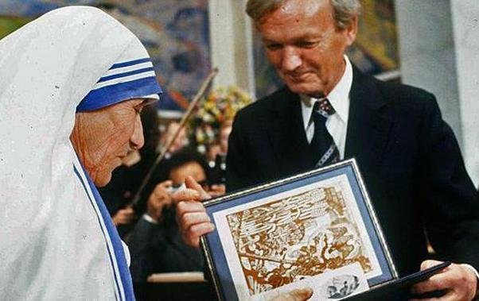
honorária dos Estados Unidos, da Índia e da própria Albânia, onde ela nasceu.
Aqui mencionaremos alguns prêmios:
1962 – O Prêmio Padma Shri dado pelo Presidente da Índia
1962 – Prêmio Magsay-say dado pelo Presidente das Filipinas
1971 – Prêmio da Paz – João XXIII – Roma, dado pelo Papa Paulo VI
1971 – Prêmio do Bom Samaritano – Em Boston
1971 – Prêmio Internacional John F. Kennedy pela Humanidade – New York
1971 – Homenageada com o titulo “Doutora Honoris Causa” pela Univers. Católica Washington
1972 – Prêmio Jawaharlal – Nehru - Do Governo Indiano – Pelo Entendimento Internacional
1973 – Prêmio Templeton (Para o Progresso da Religião) – Dado pelo Príncipe Philip – Londres
1973 – Prêmio Nobel da Paz (17 de Outubro de 1973)
1974 – Prêmio Bharat Ratua – Prêmio mais importante da Índia
1979 – É nomeada pelo Papa João Paulo II – “Embaixadora do Papa em todas as Nações”
1985 – Medalha Presidencial da Liberdade – A mais alta distinção civil dos Estados Unidos.
1987 – É condecorada com a Medalha de Ouro do Comitê Soviético da Paz
1992 – Reconhecida como Cidadã Honorária da Albânia
1996 – Tornou-se Cidadã Honorária dos Estados Unidos
E muitas outras Condecorações e Medalhas de Honra ao Mérito, que enchem duas caixas de sapato.
MORTE DE MADRE TERESA
Em 1983, com a idade de 73 anos, estando em Roma, sofreu o primeiro grave ataque do coração. Em setembro de 1989, sofreu o seu segundo ataque do coração e recebeu um marca-passo. Doente e sofrendo dores violentíssimas na cama de um Hospital, um dos médicos lhe perguntou: “Madre Teresa, o que eu não entendo é porque razão a senhora tem de sofrer tanto?” Ela respondeu: “Porque JESUS Mesmo sofreu muito e porque eu pertenço a ELE. Se eu tiver de morrer amanhã, tudo bem. ELE pode SE servir de mim como quiser. Eu não tenho voto na matéria”. Com essa entrega total Madre Teresa viveu um princípio que também constava dos seus estatutos: “A entrega total consiste em aceitar sempre o que ELE der, e dar tudo aquilo que ELE tira, e em ambas as situações sempre com um grande sorriso.”
No final de seus dias, com a doença no auge, teve de suportar uma abominável aflição, como se acontecesse um abandono de DEUS. Tudo por causa das dificuldades respiratórias e da insuficiência cardíaca, que chegou muitas vezes ao baixíssimo valor de 50% da sua capacidade, ficando comprometida a circulação sanguínea no seu corpo. Por isso, Madre Teresa tinha alucinações. Teve inclusive a sensação de que todas as Irmãs a tinham abandonado.
Ela foi operada várias vezes do coração. Mas nem com o seu coração fraco e nem os conselhos médicos bem-intencionados, conseguiam frear ou impedir que ela carregasse toda a carga do trabalho diário, que sempre realizava com amor, disciplina e modelo para as Irmãs.
Em Março de 1997 teve, finalmente, de passar a responsabilidade de Superiora da sua Congregação. Morreu na noite do dia 5 de Setembro de 1997, em Calcutá, depois de sofrer uma parada cardíaca. Seu corpo foi transladado ao Estádio Netaji, onde o cardeal Ângelo Sodano, Secretário de Estado do Vaticano, celebrou a Santa Missa de corpo presente.
A sua Ordem Religiosa já estava constituída por 5 Congregações e possuía 592 Casas, mais exatamente como ela denominava não de Casas, mas de “Tabernáculos”, em muitos países. Em 2010 já existiam mais de 750 “Tabernáculos” e mais de cinco mil Irmãs. Sua sepultura está no piso-terreo da “Casa-Mãe das Missionárias da Caridade”, em Calcutá, na Índia. Nela encontra-se uma frase de JESUS, tirada do Capítulo 15 do Evangelho de São João: “Amai-vos uns aos outros, assim como eu vos amei”.
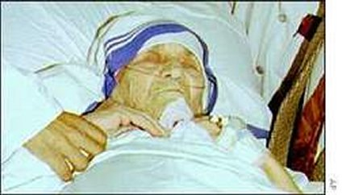
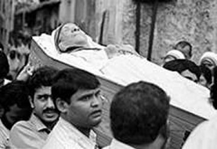
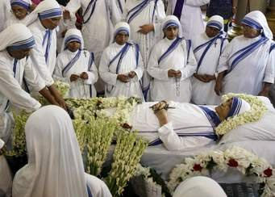
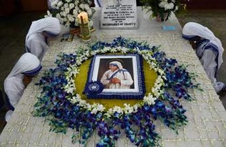
BEATIFICAÇÃO E CANONIZAÇÃO
Ela foi “BEATIFICADA” no dia 19 de Outubro de 2003, pelo Papa João Paulo II, em virtude de um milagre com Monika Besra, uma indiana de 30 anos que nem era cristã (seguia uma doutrina filosófica denominada animista), que sofria de um terrível tumor abdominal, e depois de muitos tratamentos médicos sem solução, veio para a casa das Irmãs para ali morrer. Era um câncer em fase terminal. As Irmãs Missionárias da Caridade em Bangladesh, na Índia, rezaram com ela e pediram a intercessão de Madre Teresa junto a DEUS, a fim de alcançar o milagre da sua cura. E o milagre aconteceu.
Foi “CANONIZADA” pelo Papa Francisco no dia 4 de Setembro de 2016, no Vaticano, com a aprovação do milagre ocorrido com o brasileiro Marcílio Haddad Andrino em 2008, residente na Baixada Santista, que estava em coma com abscessos no cérebro e com hidrocefalia. Sua família rezou para a Madre Teresa e suplicou fervorosamente a sua intercessão junto a DEUS em favor de Marcílio. NOSSO SENHOR atendeu a intercessão de Madre Teresa e salvou a vida dele.
OBSERVAÇÃO:
"O Senhor Marcílio Haddad Andrino, embora muito feliz com o milagre, agradeceu interiormente a bondade intercessora de Madre Teresa, assim como a especial e misericordiosa bondade de DEUS de salvar sua vida, curando-o totalmente de todos os seus males. Todavia, respeitosamente declinou da oportunidade de ser fotografado para testemunhar o milagre. Na foto atual, ele é representado pelo seu filho segurando um retrato de Madre Teresa".
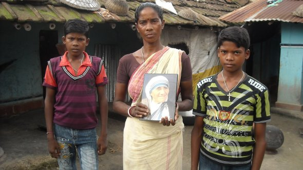
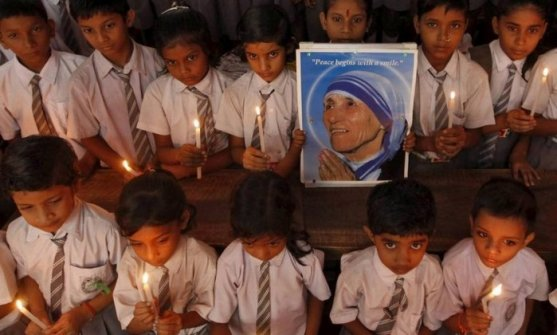
A CANONIZAÇÃO DE MADRE TERESA DE CALCUTÁ
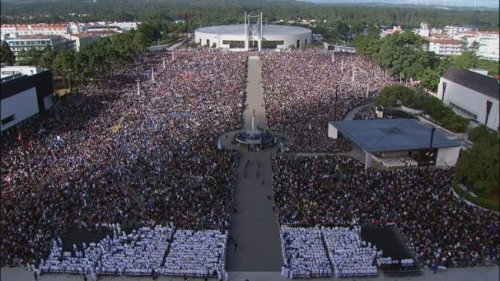
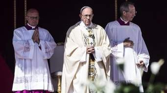
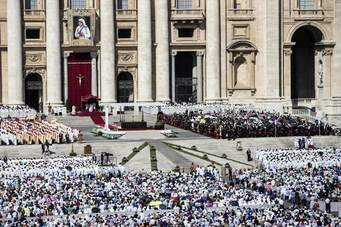
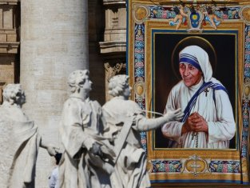